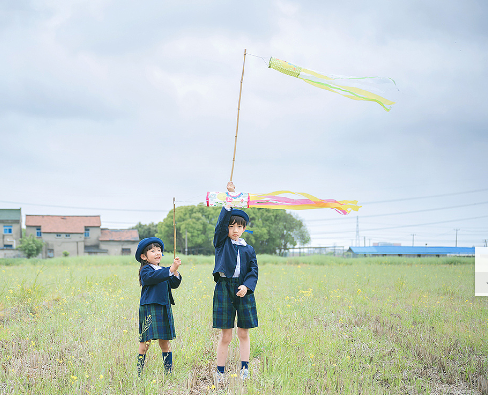
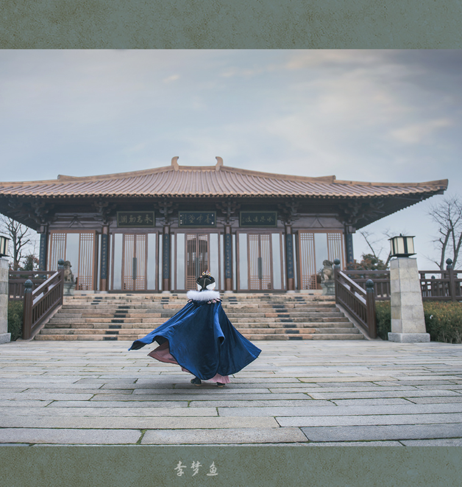

日系
日系
在色彩方面，在调整图层中用饱和度工具降低饱和度。用曲线调整图层减少对比度，并提高整体亮度，对于过曝或高调区域可下拉曲线，注意是沿着右边输出线下拉。选取拍摄内容时，可留心明度高的色彩，组合成画面。当然你可以给照片加入淡淡的蓝色或是少许温暖的黄色，洋红色轻微加入也可有种胶片的色彩感觉，都可用曲线工具.

港风
① 明暗细节丰富（影调）港风胶片照片会保留更多高光和暗部的细节，亮部不曝暗部不暗，具有丰富的层次和更明显的对比，画面更加“精致细腻”，而人们往往都更喜欢清晰的，具有更多细节的视觉感。② 色彩细腻饱满（色调）在胶片的制造和冲洗过程中会使颜色发生偏移，我们常说的“色偏”，另外照片呈现的颜色比肉眼所见更加油润饱满。一般来说胶片的色彩并无特定唯一的风格，我们常见的色偏出现在绿色偏青色，亮部偏米黄、红色偏橙色等，而这些颜色都给人浓郁复古的感觉。

古风
古风
古风人像能让女孩仿佛古代女子一般唯美飘逸，古典韵味十足并且带有浓郁的中国古典文化风格元素。古风人像摄影不仅注重画面的古典，同时还需要和中国传统文化相结合，以求获得唯美的意境和细腻的画面感。古风人像和现代人像在拍摄手法上有很大的区别。拍摄现代人像时，为了突出人物，摄影师往往喜欢把背景虚化掉。但是古风人像不仅要突出人物，还需要人物和拍摄环境相结合，换句话来说就是环境人像。